Circuit rapide
Une journée à Taza
Un programme simple pour découvrir l’essentiel de la ville : ancienne médina, cafés locaux, Ras El Ma et balade légère.
Plus d’informationsÀ faire
Explorez les meilleures activités à Taza grâce à ces idées inspirantes.
Sélectionnez une catégorie dans le menu ci-dessus pour afficher les suggestions appropriées.
Découvrez les saveurs de Taza à travers les plats locaux, les marchés traditionnels, les cafés paisibles et les expériences culinaires qui reflètent l'hospitalité marocaine.

Découvrez l'art du tajine, ce plat mijoté lentement qui marie viandes tendres, légumes frais et épices aromatiques. Chaque bouchée raconte l'histoire culinaire du Maroc, où la patience et les ingrédients de qualité créent une symphonie de saveurs.
Le pain marocain traditionnel est un élément essentiel de la table marocaine. Il accompagne le tajine, la harira, les olives, le fromage et plusieurs plats locaux. À Taza, le visiteur peut le découvrir dans les marchés et les boulangeries traditionnelles.


La chebakia est l'une des pâtisseries marocaines traditionnelles les plus connues. Préparée avec du miel, du sésame et des épices parfumées, elle accompagne souvent la harira, surtout pendant le mois de Ramadan. À Taza, les visiteurs peuvent la goûter dans les pâtisseries et les boulangeries traditionnelles.
La seffa marocaine est un plat traditionnel très connu au Maroc. Elle est généralement préparée avec des vermicelles ou du couscous, puis décorée avec du sucre glace, de la cannelle et des amandes. La seffa est souvent servie lors des fêtes et des occasions familiales, et elle est appréciée pour son goût délicat et sa présentation élégante. À Taza, les visiteurs peuvent découvrir ce plat dans certains restaurants locaux et cadres traditionnels.


Le couscous marocain est l’un des plats traditionnels les plus célèbres du Maroc. Il est généralement préparé avec des légumes et de la viande ou du poulet, puis servi lors des repas familiaux et le vendredi. À Taza, les visiteurs peuvent savourer ce plat dans les restaurants locaux ou dans des cadres traditionnels reflétant l’hospitalité marocaine.
La harira marocaine est une soupe traditionnelle très connue, préparée avec des tomates, des lentilles, des pois chiches et des épices. Elle est particulièrement appréciée pendant le mois de Ramadan. À Taza, les visiteurs peuvent découvrir ce plat dans les restaurants locaux et les cuisines traditionnelles qui préservent les saveurs marocaines authentiques.


Les grillades marocaines comptent parmi les expériences culinaires appréciées par les visiteurs grâce à leurs saveurs riches et à leur préparation traditionnelle. Elles comprennent souvent de la viande, du poulet ou de la kefta grillée avec des épices marocaines, servies avec du pain local ou des salades. À Taza, les visiteurs peuvent les déguster dans les restaurants populaires et les lieux réputés pour la cuisine locale.
Le thé marocain à la menthe est un symbole de l’hospitalité marocaine. Il est servi dans un théière traditionnelle avec de petits verres et de la menthe fraîche. C’est l’une des boissons les plus emblématiques du Maroc, souvent présente lors des moments de convivialité et de l’accueil des invités. À Taza, les visiteurs peuvent profiter de cette expérience dans les cafés traditionnels, les maisons d’hôtes et les restaurants locaux.


Le msemen marocain est l’une des crêpes traditionnelles les plus connues du Maroc. Il se distingue par sa texture fine et ses multiples couches. Il est souvent servi au petit-déjeuner ou avec le thé marocain, et peut être dégusté avec du miel, du beurre ou du fromage. À Taza, les visiteurs peuvent le découvrir dans les boulangeries traditionnelles et les cafés locaux.
Expérience de la journée
Découvrez l’ambiance de Taza le matin et le soir, entre balades paisibles, cafés locaux et beaux paysages.
Commencez votre journée à Taza par une balade paisible dans ses anciens quartiers ou par une visite des lieux naturels proches. Le matin est idéal pour marcher, prendre des photos et découvrir la vie locale en douceur.
Découvrir le matin
Le soir, vous pouvez profiter de l’ambiance calme de Taza, visiter les cafés locaux, vous promener dans quelques rues proches ou savourer un thé marocain dans une atmosphère simple et agréable.
Conseils pour le soir
Inspiration voyage
Choisissez une idée de voyage selon votre temps, vos envies et votre style de visite : nature, culture, famille ou expérience locale.
Circuit rapide
Un programme simple pour découvrir l’essentiel de la ville : ancienne médina, cafés locaux, Ras El Ma et balade légère.
Plus d’informations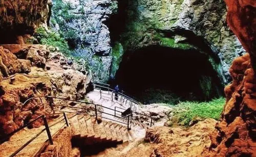
Deux jours
Deux jours pour explorer la nature, visiter le Gouffre de Friouato, découvrir Tazekka et profiter de la cuisine locale.
Plus d’informations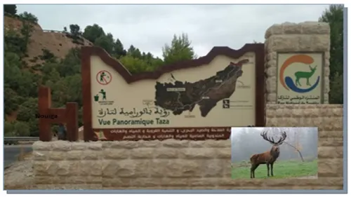
Nature
Une idée de voyage pour les amateurs de forêts, montagnes, air frais et paysages calmes autour de Taza.
Plus d’informations
Culture
Un parcours pour découvrir l’histoire de Taza, ses portes anciennes, sa médina et son ambiance traditionnelle.
Plus d’informations
Famille
Des lieux calmes et accessibles pour passer un bon moment en famille entre nature, détente et petites balades.
Plus d’informations
Expérience locale
Découvrez les saveurs marocaines, les marchés, le thé à la menthe et les spécialités traditionnelles.
Plus d’informationsFestivals et événements
Découvrez les moments forts de la vie locale à Taza : fêtes culturelles, marchés, activités saisonnières et rencontres autour du patrimoine.
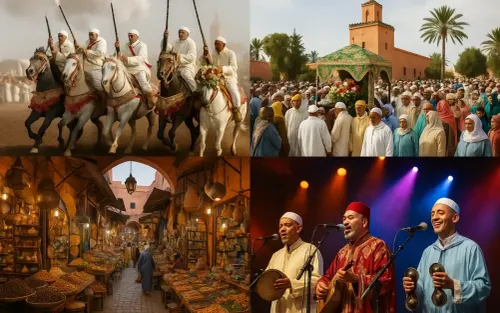
Culture
Un moment pour découvrir la musique, les traditions, les habits locaux et l’ambiance culturelle de la région de Taza.
Date : 15 juillet 2026
Heure : 18:00 - 22:00
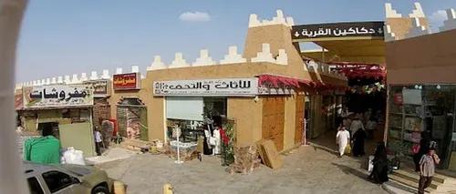
Marchés
Les marchés de Taza offrent une expérience authentique avec des produits locaux, des épices, des fruits, des légumes et de l’artisanat.
Date : Chaque dimanche
Heure : 08:00 - 13:00
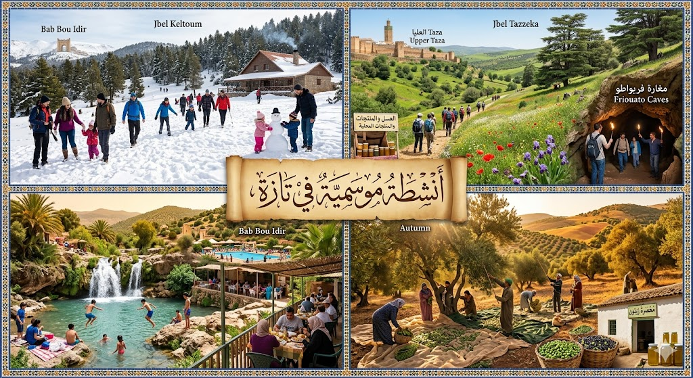
Saison
Selon la saison, les visiteurs peuvent profiter de sorties en nature, de rencontres locales ou d’activités autour des paysages de Taza.
Date : Printemps 2026
Heure : 10:00 - 16:00
Conseil
Les événements peuvent changer selon les saisons. Il est conseillé de vérifier les dates auprès des pages locales, des associations ou des offices de tourisme.
Activités
Profitez de Taza à travers des expériences simples et agréables : promenades, photographie, découvertes locales et moments de détente.
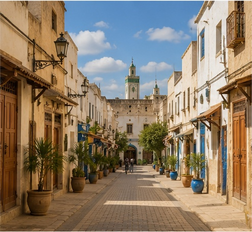
Promenade
Découvrez les rues de Taza, ses quartiers calmes et son ambiance locale à travers une promenade légère.
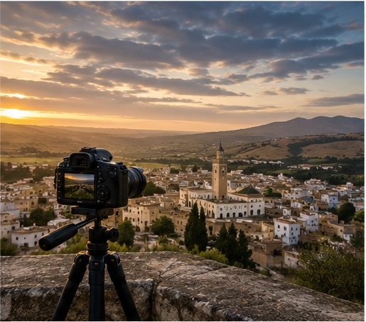
Photographie
Profitez des vues sur la ville, des paysages naturels et des lieux historiques pour prendre de belles photos.
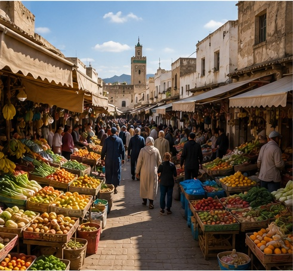
Découverte
Observez les marchés, les cafés, les habitudes quotidiennes et l’accueil chaleureux des habitants.
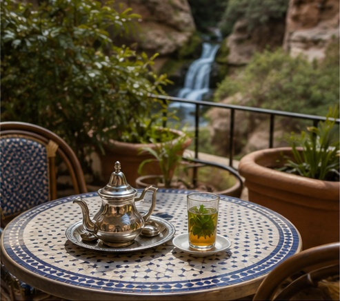
Détente
Prenez le temps de vous reposer dans un café local, un espace vert ou un lieu calme de la ville.
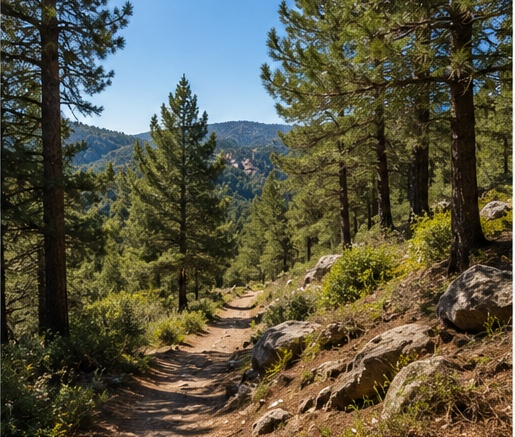
Nature
Explorez les environs naturels de Taza avec une marche simple adaptée aux amateurs de paysages calmes.
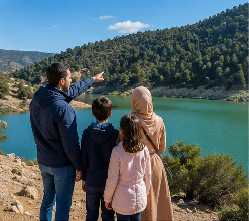
Famille
Choisissez des lieux faciles d’accès pour passer un moment agréable avec la famille.
Conseil
Si vous avez peu de temps, commencez par une balade légère ou une visite proche. Pour une journée complète, combinez nature, culture et pause dans un café local.
Histoire et religion
Découvrez l’histoire ancienne de Taza, ses monuments, ses portes, ses mosquées et les lieux qui témoignent de son importance culturelle et spirituelle.
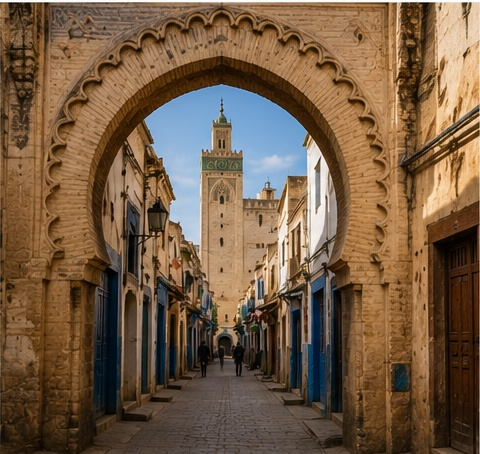
Patrimoine
La médina de Taza reflète l’histoire de la ville à travers ses ruelles, ses portes anciennes et son architecture traditionnelle.
Plus d’informations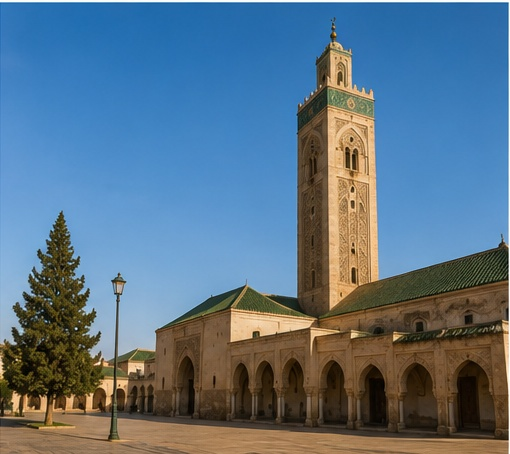
Religion
Un monument religieux important qui rappelle le rôle spirituel et historique de Taza dans la région.
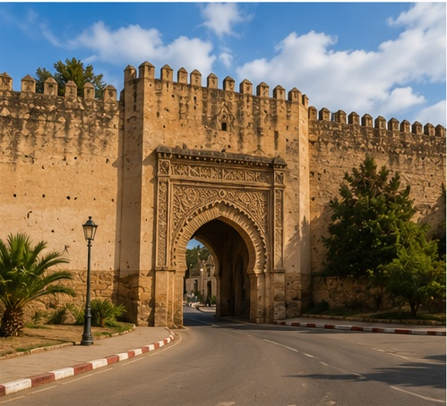
Architecture
Les anciennes portes et les remparts montrent l’importance stratégique de Taza comme passage entre plusieurs régions du Maroc.
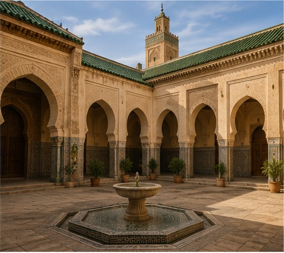
Spiritualité
La ville possède une atmosphère spirituelle marquée par ses mosquées, ses quartiers anciens et ses traditions religieuses.
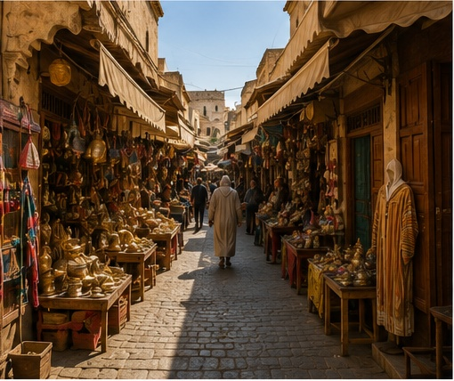
Vie ancienne
Les anciens souks témoignent de la vie quotidienne, du commerce local et des traditions qui ont marqué la ville.
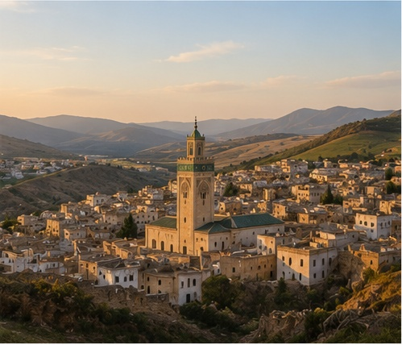
Mémoire
Taza garde une mémoire riche liée à son emplacement, à son patrimoine et à son rôle dans l’histoire du Maroc.
Conseil
Lors de la visite des lieux historiques ou religieux, il est conseillé de respecter le calme, les traditions locales et les règles propres à chaque lieu.
Art et culture
Découvrez la richesse culturelle de Taza à travers l’artisanat, la musique, les traditions, les souks et les moments de vie locale.
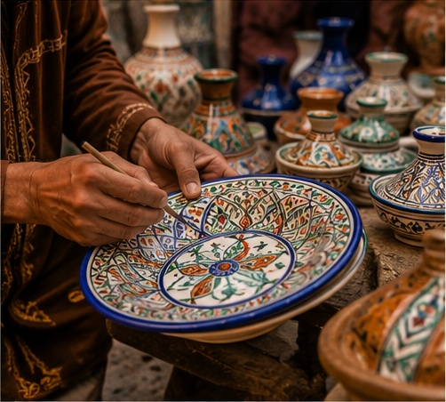
Artisanat
Découvrez les objets traditionnels, les produits faits à la main et le savoir-faire local transmis de génération en génération.
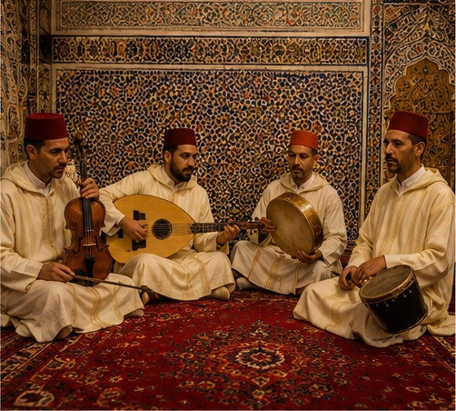
Musique
La musique traditionnelle et les rythmes locaux donnent une image vivante de la culture et des rassemblements populaires.
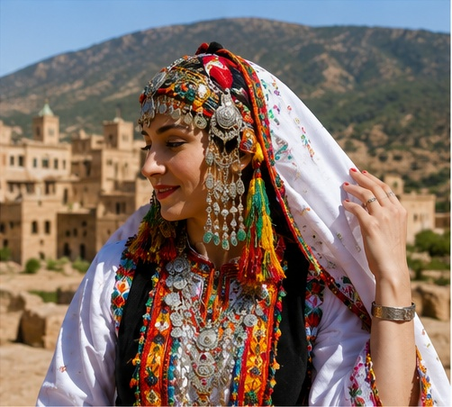
Traditions
Les habits traditionnels, les coutumes familiales et les pratiques locales font partie de l’identité culturelle de Taza.
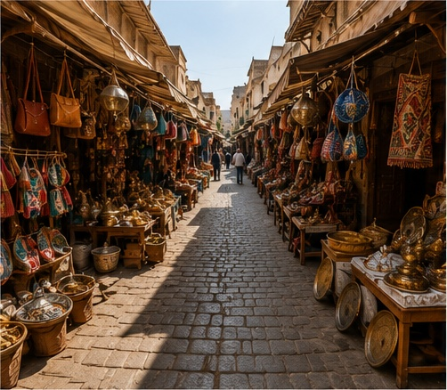
Souks
Les souks permettent d’observer la vie locale, les échanges, les couleurs, les odeurs et l’ambiance authentique de la ville.
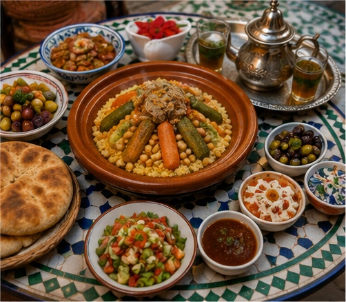
Saveurs
La cuisine locale fait partie de la culture marocaine : pain, thé, couscous, harira et autres spécialités partagées en famille.
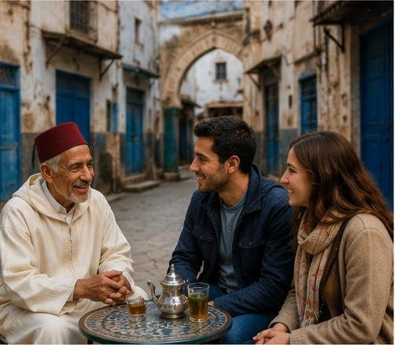
Rencontres
Les échanges avec les habitants permettent de mieux comprendre l’accueil, les traditions et la simplicité de la vie locale.
Conseil
Pour découvrir la culture locale, prenez le temps de discuter, d’observer les détails et de respecter les traditions des habitants.